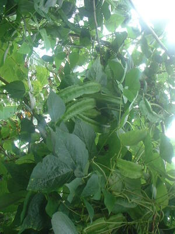

kelubang 
/kɔlubaŋ/
n.
Solanum_tuberosum
Solanum tuberosum
Ka kelubang iyan ka pinamula ne egdul-ug ka lawa wey egpangahapkap ne malabirey se behas ne manipis wey meilem.
Warè e rè due nakakeen te kelubang ke mamenu se nanam kayi.
I never eaten a kalubang if how it taste.
Mapampamula ka iney ku te kelubang su igkeupii rin amana te egkeen.
My mother loved to grew kalubang because she likes to eat it.
Kahiyen ku te egsuman ke kasili ka serè ney, kunaleg te kelubang bes.
I thought our viand is an eel, but rather it’s kalubang.
OCM: Flora (137)
Online dict status: -
Usage level: R
Updated by: RJH,TME,RJH
Last updated: 13/Oct/2009
This page last updated: 28-Dec-2019
Copyright © 2009-2014, Matigsalug Language Christian Association, Inc